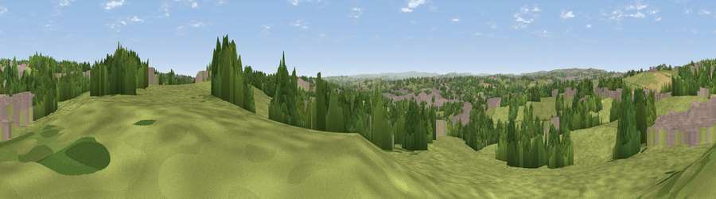

Viewpoint near Hunsworth
#23343 in England · top 39% of its area beats it · near Hunsworth · path 130 mWhere it is
The exact computed spot (SE 19775 27225). Click the marker for map links.
Public access: the nearest public right of way is about 130 m away — the final stretch may cross private land. Computed from Natural England's CRoW access layer and OpenStreetMap rights of way — not the legal definitive map. Always verify locally.
The view, rendered

A 360° render of this exact spot computed from the terrain model, tree cover and land cover — summer colours, afternoon light, calibrated against photographs of famous viewpoints. Real trees, hedges and buildings will differ in detail.
The panorama
Grey silhouette: terrain skyline in each direction (720 bearings, Earth curvature and refraction included). Dashed green: skyline with trees (+15 m) and buildings (+8 m) as obstacles. Blue strip: how far the ground is visible on each bearing.
Where the view opens
Wedge length = distance to the farthest visible ground on that bearing (vegetation-aware). Rings at 10, 25 and 50 km.
What fills the view
61% grassland · 22% woodland · 15% built-up · 2% cropland
Angular shares of the visible panorama (visual magnitude), not map area. Landscape diversity 0.44 (0–1 Shannon).
Key numbers
More beautiful places nearby
The staircase of upgrades: each row has a higher view potential than everything closer. Driving times are estimates from straight-line distance, calibrated against real road routing — check an actual route before setting out.
| Place | Direction | Drive | Score |
|---|---|---|---|
| Viewpoint near Birkenshaw | N · 1 km | ~2 min | 49.4 |
| Viewpoint near Birkenshaw | NNW · 2 km | ~5 min | 50.5 |
| Viewpoint near Little Gomersal | SSE · 3 km | ~7 min | 54.0 |
| Viewpoint near Birstall | SE · 3 km | ~7 min | 54.2 |
| Viewpoint near Hartshead | SSW · 5 km | ~10 min | 58.8 |
| Viewpoint near Woodkirk | ESE · 6 km | ~13 min | 62.1 |
| Viewpoint near Kirkheaton | S · 9 km | ~17 min | 68.0 |
| Viewpoint near Stump Cross | W · 11 km | ~21 min | 71.5 |
53.74104, -1.70166 · source: screening · position refined by local search. Computed location — check access rights before visiting.